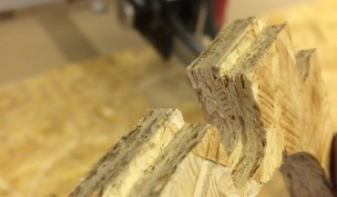
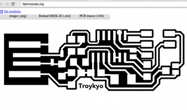
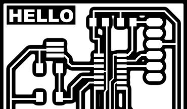
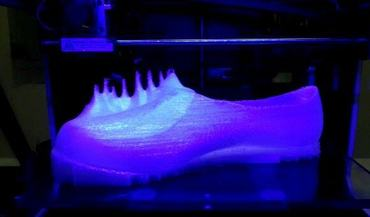
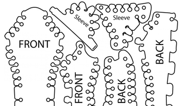

Troy Nachtigall :: Fab Academy
My love for laser cutting in fashion led me to be one of the founders of the Florence Fab Lab. Upon seeing what a Fab Lab in the the Fab Network is capable of I applied to the Fab Academy 2015 program at the Fab Lab in Cascina, just a few kilometers from Pisa, Italy. I have a degree as a designer and a strong interest in digital fabrication and its implications on design. Please click on the link if you want to learn more about me, my project and the study log. Thanks for visiting!
Class Work - All the documentation that's fit to print.

Week 10 - In Progress
Input Devices - 23 Mar 2015
Can you hear me now? | Updated 14 Apr 2015
---------------------------------------

Week 9 - Completed
Molding and Casting - 23 Mar 2015
MONEY MONEY MONEY! | Updated 2 Apr 2015
---------------------------------------

Week 8 - In Progress
Milling Something Big - 17 Mar 2015
Make Something Bic | Updated 25 Mar 2015
---------------------------------------

Week 7 - In Progress
Embedded Programing - 10 Mar 2015
Things that make you go blink | Updated 17 Mar 2015
---------------------------------------

Week 6 - Completed
Electronics Design - 3 Mar 2015
Shoes and more Shoes | Updated 9 Mar 2015
---------------------------------------

Week 5 - Completed
3D Printing and Scanning - 25 Feb 2015
Shoes and more Shoes | Updated 3 Mar 2015
---------------------------------------

Week 4 - Completed
Electronics Production - 18 Feb 2015
The Circuit Begins | Updated 25 Feb 2015
---------------------------------------

Week 3 - In Progress
Computer Controlled Cutting - 11 Feb 2015
Cutting it up | Updated 25 Feb 2015
---------------------------------------

Week 2 - Completed
Computer Aided Design Feb 4 2015
The Software to our hardware | Updated 10 Feb 2015
---------------------------------------

Week 1- Completed
Principles and Practices 28 Jan 2015
An Intro to Digital Fabrication | Updated 03 Feb 2015
---------------------------------------

Week 0
Prep Classes 16-26 Jan 015
Four prep classes on CLI, Version Control, Websites and Python. | Updated 30 Jan 2015
About Me
 Troy Nachtigall is a designer that loves innovating fashion and encouraging people to create their Shoes, Shirts and Bags. He moved to New York City in 1999 to study Design and work in Digital Media Technology. In companies such as Viacom (MTV, Comedy Central and BET) Troy invented and implemented new ways of communicating and connecting via the interwebs. Now in Florence and Eindhoven, Troy continues to invent new ways to create and design for companies such as Calvin Klein, Jean Paul Gaultier Jeans, Hugo Boss and Emilio Cavallini. Beyond this, Troy has taken his creative talents into fields such as interaction design with research and projects presented in several workshops and conferences throughout Europe including ISWC, MakerFaire, MakeTank, Apple, Wearable Technology workshops, Inntex, and more. Moreover, Troy shares his experiences and insights teaching courses such as Eco-Design at the ISIA, Wearable Technology at the PIN (University of Florence) and Coaching in the Wearable Senses Lab at TUe.
Troy Nachtigall is a designer that loves innovating fashion and encouraging people to create their Shoes, Shirts and Bags. He moved to New York City in 1999 to study Design and work in Digital Media Technology. In companies such as Viacom (MTV, Comedy Central and BET) Troy invented and implemented new ways of communicating and connecting via the interwebs. Now in Florence and Eindhoven, Troy continues to invent new ways to create and design for companies such as Calvin Klein, Jean Paul Gaultier Jeans, Hugo Boss and Emilio Cavallini. Beyond this, Troy has taken his creative talents into fields such as interaction design with research and projects presented in several workshops and conferences throughout Europe including ISWC, MakerFaire, MakeTank, Apple, Wearable Technology workshops, Inntex, and more. Moreover, Troy shares his experiences and insights teaching courses such as Eco-Design at the ISIA, Wearable Technology at the PIN (University of Florence) and Coaching in the Wearable Senses Lab at TUe.
Get In Touch
Troy is a busy person, but if you have a question, suggestion or need him to help on your next project please get in touch.